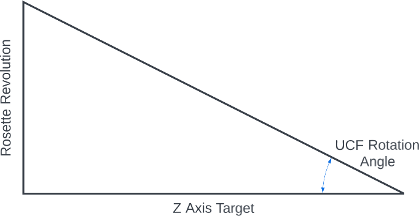

Note, when making a left helix, the Rosette Pattern Rotation will be a negative number.
For the angle to set the universal cutting frame (UCF), imagine there is a triangle where the adjacent side is along the Z axis, and the opposite side is wrapped around the face, perpendicular to the Z axis. The image to the right shows such a triangle.
Opposite Side of the Triangle
The cylinder's circumference at the Final Average Diameter is π times that.
A rosette's revolution, specified in degrees (°), would of course be that portion of the cylinder's circumference. Thus, the Rosette Pattern Rotation distance is calculated as a fraction of the cylinder circumference.
\begin{align*}
\tag{4}
Cylinder \, circumference &= \pi \cdot Final \, Average \, Diameter \\
\tag{5}
Rosette \, Pattern \, Revolution \, Distance &= Cylinder \, circumference \cdot \left(\frac {Rosette \, Pattern \, Revolution\unicode{xB0}} {360\unicode{xB0}} \right)
\end{align*}
Adjacent Side of the Triangle
For the adjacent side, we use the Z Axis Target.
Calculation of the UCF Rotation Angle

Angle to be Calculated
The UCF Rotation Angle is then calculated using the tan-1 (arctan) calculation.
\begin{align*}
\tag{6}
UCF \, Rotation \unicode{xB0} &= \tan^{-1} \left(\frac {Rosette \, Revolution \, Distance} {Z \, Axis \, Target} \right)
\end{align*}
|